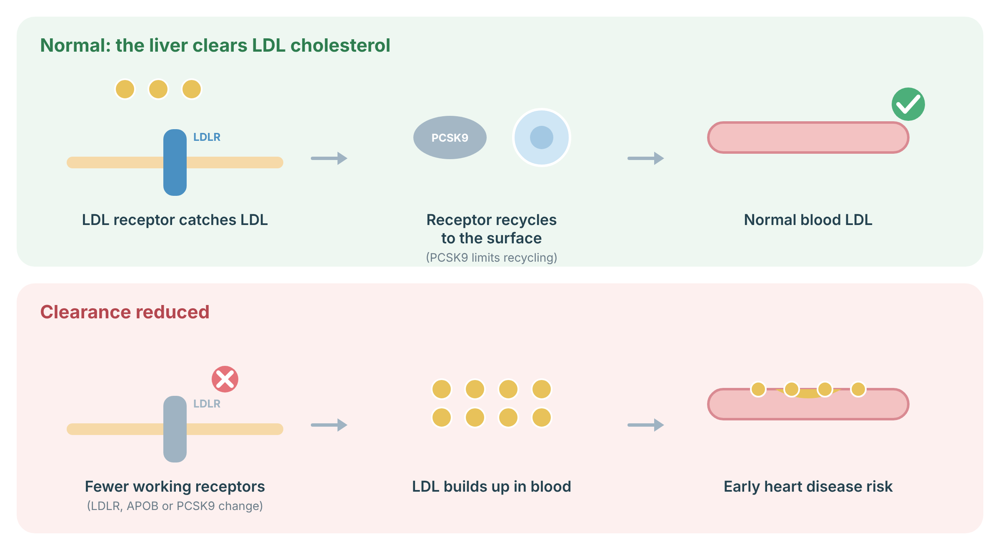
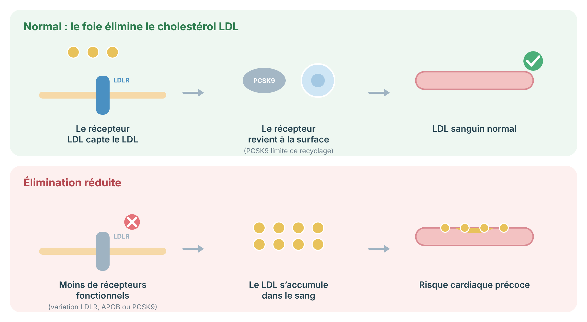

A protocol for PCSK9 variants and cholesterol: gain-of-function familial hypercholesterolemia, protective loss-of-function variants, testing, PCSK9-targeted therapy, and family screening.
Protocole sur les variants PCSK9 et le cholestérol : hypercholestérolémie familiale par gain de fonction, variants protecteurs perte de fonction, tests, thérapies ciblant PCSK9 et dépistage familial.
PCSK9 is a protein that controls how many "LDL receptors" your liver has. These receptors clear LDL ("bad") cholesterol from the blood. Some rare changes in the PCSK9 gene make the protein overactive, which raises LDL cholesterol from birth and causes familial hypercholesterolemia (FH). Other changes make it less active and lower cholesterol. This discovery led to medicines that block PCSK9 and lower LDL cholesterol strongly.
PCSK9 est une protéine qui contrôle le nombre de « récepteurs des LDL » dans votre foie. Ces récepteurs retirent le cholestérol LDL (le « mauvais ») du sang. Certaines modifications rares du gène PCSK9 rendent la protéine trop active, ce qui élève le cholestérol LDL dès la naissance et cause l'hypercholestérolémie familiale (HF). D'autres modifications la rendent moins active et abaissent le cholestérol. Cette découverte a mené à des médicaments qui bloquent PCSK9 et abaissent fortement le cholestérol LDL.
PCSK9 binds the LDL receptor and targets it for lysosomal degradation. Gain-of-function PCSK9 variants were identified in 2003 as the third cause of autosomal dominant hypercholesterolemia, after LDLR and APOB; they account for a small minority of genetically confirmed FH. Conversely, loss-of-function variants are associated with lifelong lower LDL cholesterol and reduced coronary heart disease risk (Cohen et al. 2006), providing genetic validation for PCSK9 inhibition.
PCSK9 se lie au récepteur des LDL et le dirige vers la dégradation lysosomale. Les variants gain de fonction de PCSK9 ont été identifiés en 2003 comme troisième cause d'hypercholestérolémie autosomique dominante, après LDLR et APOB; ils représentent une petite minorité des HF confirmées génétiquement. À l'inverse, les variants perte de fonction sont associés à un cholestérol LDL plus bas toute la vie et à un risque coronarien réduit (Cohen et coll., 2006), ce qui a validé génétiquement l'inhibition de PCSK9.
| Variant type | Effect | Clinical meaning |
|---|---|---|
| Type de variant | Effet | Signification clinique |
| Gain of function | Fewer LDL receptors; high LDL-C | Familial hypercholesterolemia; manage as FH |
| Gain de fonction | Moins de récepteurs LDL; LDL-C élevé | Hypercholestérolémie familiale; prise en charge comme une HF |
| Loss of function | More LDL receptors; low LDL-C | Usually benign; lower cardiovascular risk |
| Perte de fonction | Plus de récepteurs LDL; LDL-C bas | Habituellement bénin; risque cardiovasculaire plus faible |
| Uncertain significance | Unknown | Manage according to the lipid phenotype, not the variant |
| Signification incertaine | Inconnu | Prise en charge selon le phénotype lipidique, non le variant |
The liver removes LDL (“bad”) cholesterol from the blood using LDL receptors on its surface. After catching LDL, each receptor is recycled back to the surface; the protein PCSK9 limits this recycling. In familial hypercholesterolemia, a change in LDLR, APOB or PCSK9 means fewer working receptors, so LDL stays high from birth and builds up in artery walls. Statins and PCSK9 inhibitors work by increasing the number of receptors.

Sources: Defesche JC, et al. Nat Rev Dis Primers 2017;3:17093 (PubMed).
Le foie retire le cholestérol LDL (« mauvais ») du sang grâce à des récepteurs LDL à sa surface. Après avoir capté le LDL, chaque récepteur est recyclé vers la surface; la protéine PCSK9 limite ce recyclage. Dans l’hypercholestérolémie familiale, une variation de LDLR, APOB ou PCSK9 réduit le nombre de récepteurs fonctionnels : le LDL reste élevé dès la naissance et s’accumule dans les artères. Les statines et les inhibiteurs de PCSK9 agissent en augmentant le nombre de récepteurs.

Sources : Defesche JC, et al. Nat Rev Dis Primers 2017;3:17093 (PubMed).
FH is suspected when LDL cholesterol is very high, especially at a young age, or when relatives had heart attacks early. A genetic test looks at LDLR, APOB, and PCSK9 together. Finding the cause helps confirm the diagnosis and lets family members be tested.
On soupçonne une HF lorsque le cholestérol LDL est très élevé, surtout jeune, ou lorsque des proches ont fait un infarctus précoce. Le test génétique analyse ensemble LDLR, APOB et PCSK9. Trouver la cause aide à confirmer le diagnostic et permet de tester les membres de la famille.
People with FH need treatment to lower LDL cholesterol, usually starting with a statin. Other medicines, including PCSK9 blockers, are added if LDL stays too high. A heart-healthy diet, physical activity, and not smoking matter too, but medicine is usually needed because the cause is genetic.
Les personnes atteintes d'HF ont besoin d'un traitement pour abaisser le cholestérol LDL, habituellement en commençant par une statine. D'autres médicaments, dont les inhibiteurs de PCSK9, sont ajoutés si le LDL demeure trop élevé. Une alimentation saine pour le cœur, l'activité physique et ne pas fumer comptent aussi, mais un médicament est habituellement nécessaire puisque la cause est génétique.
FH is inherited in a dominant way: each first-degree relative has a 1 in 2 chance of having it. Testing relatives — including children — finds people who benefit from early treatment. Children with FH can usually start a statin in later childhood.
L'HF se transmet de façon dominante : chaque apparenté au premier degré a une chance sur deux d'en être atteint. Tester les apparentés — y compris les enfants — permet de trouver les personnes qui bénéficient d'un traitement précoce. Les enfants atteints d'HF peuvent habituellement commencer une statine vers la fin de l'enfance.
Original diagrams are the work of the author (© 2026 Dr. Andrew Shuen).
Les schémas originaux sont l'œuvre de l'auteur (© 2026 Dr Andrew Shuen).